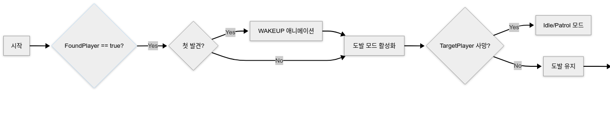

01 — Summary요점과 역할
- 네비게이션 메시 — Cell · Navigation · Region · Stage를 직접 구현. 이동 검사, 점프 · 낙하, 경계 위치 보정
- A* 길찾기 — 셀 그래프 위 경로 탐색을 프레임 단위로 진행하고, 가시선 검사로 경로 직선화
- 몬스터 AI 4종 — 미라 · 미노타우르스 · 할리퀸 · 아누비스. 애니메이션 컨트롤러 기반 상태 전환
- ImGui 편집 툴 2종 — 네비게이션 메시 편집, 모델 배치(레벨 구성)
 Code Dungeon 발표 영상 (4:03부터) · YouTube
Code Dungeon 발표 영상 (4:03부터) · YouTube
팀원 작업렌더링은 모두 팀원 작업입니다(디퍼드 렌더링 · 셰도우맵 · 셰이더 · 컴퓨트 셰이더 파티클 · 외곽선). 네트워크(IOCP · Protobuf)도 팀원 담당이며, 엔진 애니메이션 시스템은 팀장이 만들었습니다. 몬스터 · 플레이어의 애니메이션 상태 전환(AnimController)은 제가 맡았습니다.
02 — Navigation Mesh네비게이션 메시
삼각형 셀을 Cell → Navigation(셀 묶음) → Region → Stage 순으로 쌓고, 각 단계를 편집하는 툴을 Tools 프로젝트에 따로 만들었습니다.
| 클래스 | 가진 것 | 하는 일 |
|---|---|---|
| UCell | 꼭짓점 3 · 변 · 법선 · 이웃 인덱스 · 점프 가능 여부 | 점이 셀 안인지 판정(IsIn) |
| UNavigation | 셀 컨테이너 · 현재 셀 | 이동 검사(IsMove), 셀 찾기, 높이 계산, 경로 탐색 |
| URegion | Navigation 하나 | 구역 단위 저장 · 불러오기 |
| UStage | Region 목록 | 스테이지 전체 관리 |
IsIn은 세 변마다 XZ 평면의 바깥 법선과 내적하는 반평면 판정입니다. 한 변이라도 바깥이면 그 변 너머의 이웃 셀 인덱스를 넘겨, IsMove가 넘어간 변의 이웃을 따라가며(최대 10회) 위치를 포함하는 셀을 찾습니다. 이웃이 없으면 이동을 막습니다.
_bool UCell::IsIn(const _float3& _vPos, _int& _iNeighborIndex, _float3& _vLine)
{
for (_uint i = 0; i < LINE_END; ++i) {
_float3 vDir = _vPos - /* 변 i의 시작점 */vPointA;
if (vDir.Dot(m_arrNormals[i]) > 0) { // 변 바깥쪽
_iNeighborIndex = m_arrNeighbors[i]; // 그 변 너머의 이웃 셀
_vLine = m_arrLines[i];
return false;
}
}
return true; // 세 변 모두 안쪽
}
03 — ImGui Tool네비게이션 편집 툴
맵 모델을 띄우고 픽킹으로 셀을 찍어 메시를 만듭니다. 별도 창에서 「Modify Navigation」을 켜면 편집이 시작됩니다.
- 셀 생성 — 픽킹할 때마다 그 위치에 큐브를 두고, 세 번째 클릭에서 셀을 만듭니다. 기존 꼭짓점 근처를 찍으면 그 꼭짓점에 붙여 이웃과 연결되게 했습니다.
- 되돌리기 — BackSpace로 꼭짓점 설정 중이면 마지막 픽킹을, 아니면 마지막 셀을 지웁니다.
- 안전한 삭제 — GPU가 쓰는 리소스와 충돌하지 않게, 지울 셀을 벡터에 모아 두고 렌더 전 Tick에서 지우도록 순서를 맞췄습니다.
- 렌더 범위 지정 — 셀이 많아지면 디버그 큐브도 늘어 프레임이 떨어져, 그릴 셀의 인덱스 범위를 정할 수 있게 했습니다.
- 셀 검사 — Pick_On_Cell로 셀을 골라 인덱스 · 이웃 인덱스를 보고, 점프 가능 여부를 바꾸거나 지웁니다. 인덱스 오류를 이웃 정보로 찾아 고쳤습니다.
- 저장 · 불러오기 — Region 이름의 바이너리 파일로 저장합니다. 클라이언트는 불러온 메시를 프로토타입으로 등록하고 객체마다 Clone해서 씁니다.


04 — Troubleshooting계단에서 캐릭터가 순간이동하던 문제
위아래로 겹친 셀을 구분하지 못함
나선 계단- 상황
- 나선 계단을 오르내릴 때 캐릭터가 위층이나 아래층으로 순간이동했습니다.
- 원인
IsIn은 XZ 평면만 보는 반평면 판정이라 높이를 모릅니다. 위아래로 겹친 셀은 평면상 같은 자리라 둘 다 「안쪽」이 되어, 먼저 찾은 다른 층 셀이 선택됐습니다.- 해결
- 후보 셀이 여럿일 때 현재 y와 셀 높이 차가 가장 작은 셀을 고르는 처리를
ComputeHeight·FindCell·IsMove에 넣었습니다.// UNavigation::ComputeHeight — 현재 셀을 모를 때 for (auto& iter : *m_spCellContainer.get()) { if (iter->IsIn(_vPosition, m_iCurIndex, vLine)) { float yDiff = std::abs(_vPosition.y - iter->GetCenterPos().y); if (minYDiff == -1.0f || yDiff < minYDiff) { minYDiff = yDiff; closestCell = iter; // 가장 가까운 층 } } } - 다시 보니
- 코드를 다시 읽어 보니
IsMove에서는 셀을 찾는 순간 그 셀에 머물러 후보가 사실상 하나라 높이 비교가 작동하지 않고, 실제 구분은ComputeHeight(절댓값 비교)와FindCell에서 일어납니다.FindCell은 부호 있는 차이를 써서 위층 셀을 고를 수 있습니다. 다시 만든다면 발밑 셀(높이 차 ≥ 0)만 후보로 두겠습니다.
05 — Movement점프 · 낙하 · 벽 미끄러짐
- 점프 가능 셀 — 셀에 점프 가능 토글을 두고, 그 셀에서 경계를 넘으면
FindCell로 아래 셀을 찾아 낙하를 시작합니다. y가 셀 높이보다 낮아지면 착지로 보고 위치를 맞춥니다. 점프 · 낙하 중이 아니면 셀 높이를 탑니다. - 셀 찾기 범위 — 셀이 많으면 전체 순회에서 프레임이 떨어져, 원래 셀 인덱스 주변을 먼저 찾도록 탐색 범위를 두었습니다.
- 경계 위치 보정 — 현재 셀 밖이면 가장 가까운 경계선 위의 점으로 옮기고, 꼭짓점에 닿으면 이웃 셀로 바꿉니다. 플레이어와 카메라에 적용해 벽을 따라 미끄러지는 효과를 냈습니다.
06 — Path FindingA* 길찾기
네비게이션 메시의 셀을 노드로 삼아 몬스터가 플레이어까지의 경로를 찾습니다. 기본 구현은 직접 했고, 이후 여러 번의 수정에 AI 도움을 받았습니다.
- 비용 — 노드에
F = g + h를 두고 우선순위 큐로 정렬합니다. 간선 비용 g와 휴리스틱 h 모두 셀 중심 사이의 3D 맨해튼 거리(|dx| + |dy| + |dz|)를 씁니다. - 프레임 분할 — 탐색 상태(열린 목록, 비용, 이전 셀, 완료 여부, 경로)를 구조체에 담아 한 프레임에 노드 하나씩 진행합니다.
- 재탐색 — 플레이어를 쫓는 몬스터는 1초마다(아누비스는 0.5초) 경로를 다시 찾습니다.
- 직선화 — 메시 위에서 2.0 간격으로 가시선 검사를 해 직선으로 갈 수 있는 중간 점을 생략, 지그재그 움직임을 줄였습니다.
bool UNavigation::StepPathFinding(PathFindingState& state)
{
if (state.openSet.empty()) return true; // 경로 없음
CellPathNode current = state.openSet.top();
state.openSet.pop();
if (current.cell == state.endCell) { /* cameFrom을 따라 경로 생성 */ return true; }
for (int neighborIndex : current.cell->GetNeighbor()) {
if (neighborIndex == -1) continue;
SHPTR<UCell> neighbor = FindCellWithoutUpdate(neighborIndex);
_float newCost = state.costSoFar[current.cell]
+ Heuristic(current.cell->GetCenterPos(), neighbor->GetCenterPos());
if (!state.costSoFar.count(neighbor) || newCost < state.costSoFar[neighbor]) {
state.costSoFar[neighbor] = newCost;
_float h = Heuristic(neighbor->GetCenterPos(), state.endCell->GetCenterPos());
state.openSet.push({ neighbor, newCost, h, newCost + h, current.cell });
state.cameFrom[neighbor] = current.cell;
}
}
return false; // 다음 프레임에 이어서
}다시 보면재탐색 타이머가 진행 중인 탐색이 있어도 새로 시작합니다. 한 프레임에 노드 하나씩이라 1초 안에 끝나지 않는 먼 거리 탐색은 계속 처음부터 다시 시작되고, 몬스터는 이전 경로를 유지합니다. 또 같은 셀이 큐에 여러 번 들어갈 수 있는데 꺼낼 때 오래된 항목을 건너뛰지 않습니다. 이 비용은 재지 않았습니다. 다시 만든다면 프레임당 노드 수를 예산으로 두고, 탐색 중에는 재시작을 미루겠습니다.
07 — Monster AI몬스터 4종
각 몬스터는 자기 경로(AStarPath)로 플레이어를 쫓습니다. AnimController가 조건에 따라 애니메이션 상태를 바꾸면 그 상태의 애니메이션을 재생하고 루트 모션을 적용합니다.

| 몬스터 | 패턴 |
|---|---|
| 미라 | 누운 형태 · 선 형태 2종. 범위에 들어오면 관이 열리며 일어나 도발 후 추적. 손 휘두르기 2종, 맞으면 짧은 경직. 멀어지면 주변 이웃 셀을 골라 배회 |
| 미노타우르스 | 발차기로 멀리 넉백. 넉백된 플레이어가 스페이스바로 일어나지 않으면 거리를 벌렸다 달려와 더 강한 발차기. 보스라 세 번 피격까지만 피격 애니메이션 · 경직, 이후 5초는 리액션 없이 공격(데미지는 그대로) |
| 할리퀸 | 전용 방에서 전투. 탐지 시 도발로 시작. 멀면 전방 3방향 수리검, 중간이면 점프 돌진, 가까우면 백스텝 · 회축 · 덤블링 발차기. 수리검마다 네비게이션 메시를 달아 기둥 · 벽을 뚫지 않음 |
| 아누비스 | 특정 위치를 지킴. 일정 시간마다 8초 보호막(그동안 피해 없음, 근접 시 넉백). 중거리(15–40)에서 마법진, 근접 시 밀쳐내기. 계단 때문에 높이 차가 있으면 마법진 대신 다가감. 플레이어가 죽거나 멀어지면 원래 자리로 복귀 |


08 — Player플레이어
- 콤보 — 좌클릭 · 우클릭 콤보, 스택 최대 3. 공격을 도중에 멈추면 스택 초기화
- 구르기 — 구르는 동안 충돌 검사를 꺼 피격 회피
- 넉백 · 기상 — 넉백 후 일정 시간 뒤 스페이스바로 일어남
- 연속 공격 스킬 — 시전 시 여러 번 공격
- R 감지 스킬 — 입력과 토글 로직 (어두워지는 화면과 외곽선 렌더링은 팀원 작업)


09 — Level Tool모델 배치 툴
맵 모델 · 오브젝트 · 몬스터의 변환을 한 화면에서 편집하고 바이너리 파일로 저장해 클라이언트에서 불러 쓰는 레벨 툴입니다. ImGuizmo로 이동 · 회전 · 크기를 직접 조작합니다.


10 — Limits한계와 다시 만든다면
| 한계 | 다시 한다면 |
|---|---|
| 겹친 층 셀 선택 기준이 함수마다 다름 (절댓값 · 부호 있는 차이) | 발밑 셀(높이 차 ≥ 0)만 후보로 두는 한 가지 기준 |
| A* 재탐색이 진행 중인 탐색을 끊을 수 있음 · 비용 미측정 | 프레임당 노드 예산, 탐색 중 재시작 지연, 프로파일링 |